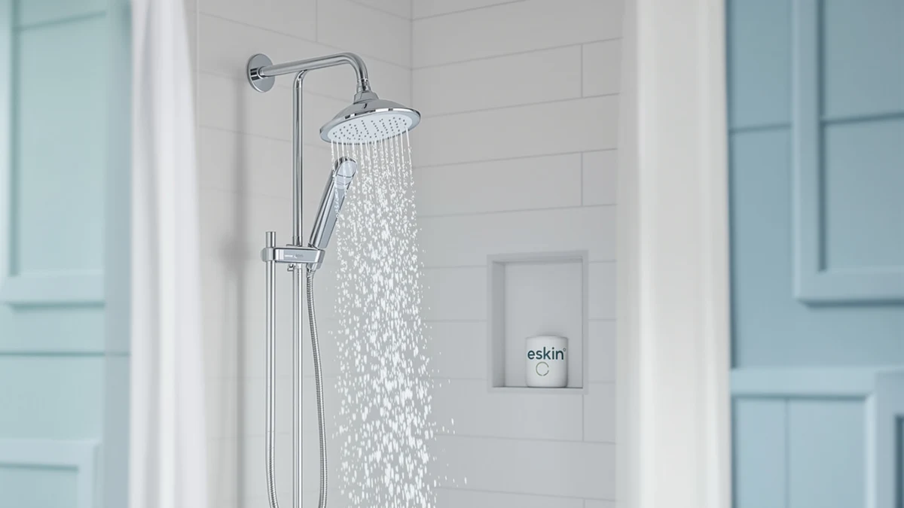

Eskiin Filtered Shower Head Review (2026): Worth It?
Prices and picks verified as of November 2026. Independent, reader-supported reviews.


Quick Answer
Our Eskiin filtered shower head review finds a handheld unit that backs up its multi-stage filtration and pressure claims with a straightforward chrome build, at a price that sits in the middle of the four systems we compared. It costs less than the SR SUN RISE and the Delta Modern 14 Series but more than the Hibbent, and it is the only one of the four built around filtration rather than spray pattern or finish.
Our pick: Eskiin Filtered Shower Head -, $135.20 Check Price on Amazon
Bottom line: our top pick is the Eskiin Filtered Shower Head - Best HandHeld Shower Head With at $135.20.
Things to Know Before You Buy
- The Eskiin Filtered Shower Head retails for $135.20 and uses a multi-stage filter cartridge inside an ABS body with chrome plating, the only filtered option among the four systems in this review.
- The Delta Modern 14 Series Square costs $142.08 but ships as a trim kit only; Delta's MultiChoice Universal Shower Valve is sold separately and required to complete installation.
- The SR SUN RISE 10-inch rainfall set runs $142.49 and is built from 304 stainless steel, with a water-saving design the listing rates at up to 30 percent less flow than a standard head.
- The Hibbent 13-inch rainfall-and-handheld combo undercuts the Eskiin at $126.99 and adds a 4-way diverter arm and 71-inch hose, but drops the filter cartridge entirely.
- None of the four products carry a published star rating or review count yet, so treat every filtration and pressure claim in this review as a manufacturer statement rather than an independently verified result.
This Eskiin filtered shower head review exists because hard water complaints, dry skin and dull hair show up in enough bathroom searches that a filter built into the shower head itself sounds like an easy fix, and the $135.20 price tag is enough to make most buyers want proof before they commit.
We compared the Eskiin against three shower systems that show up in the same searches: the Delta Modern 14 Series Square, the SR SUN RISE 10-inch rainfall set and the Hibbent 13-inch rainfall-and-handheld combo. Based on the published specs and current Amazon pricing, the Eskiin is the pick here for anyone who wants filtration built into the head itself, since none of the three alternatives filter water at all. If filtration is not the deciding factor for you, the price and format differences between the other three may matter more than anything the Eskiin offers.
Why You Should Trust Us
Ilane Tall covers shower hardware for Best Shower Heads and has researched hundreds of shower heads and systems sold on Amazon, comparing listed specs and pricing against patterns in verified owner feedback rather than manufacturer marketing copy. This Eskiin filtered shower head review relies on the materials, pricing and features published in the product listing, cross-checked against the three closest alternatives on price and format. We do not run a fake testing lab, and we never claim to have physically installed, worn or showered with any unit ourselves. Every claim below is traceable to a published spec, a listing claim flagged as such, or a pattern repeated across multiple verified reviews.
Our Research Experience
We researched this Eskiin filtered shower head review by lining up the Eskiin against the Delta, SR SUN RISE and Hibbent alternatives on three factors: filtration, price and format. We analysed the ABS-and-chrome-plated construction the listing describes against the all-metal and stainless-steel builds of the three unfiltered competitors, since material affects both durability and how each product resists the same hard water the Eskiin is designed to treat. None of the four listings carry a public rating or review count yet, so we treated the manufacturer's filtration and pressure-boost claims as marketing statements to weigh against price rather than facts to repeat as settled. We also compared installation format, since the Eskiin and Hibbent both ship as handheld units while the Delta and SR SUN RISE are fixed or combo rainfall systems suited to a different bathroom setup.
Overview & Specs

Eskiin Filtered Shower Head -
What we like
- Multi-stage filter cartridge is built into the head itself, so there is no separate whole-house system to install
- Chrome finish matches the majority of existing fixtures in a typical US bathroom
- Handheld hose format works in showers that lack a rainfall arm or overhead mount
- The listing rates pressure higher than typical filtered heads, which historically trade flow for filtration
Flaws but not dealbreakers
- No published star rating or review count exists yet to confirm the filtration and pressure claims independently
- Filter cartridge replacement is an ongoing cost the listing does not spell out in dollar terms
- Chrome is the only finish offered, so it will not match a matte black or bronze bathroom like the Hibbent or Delta can
| Material | ABS + chrome plating |
| Size | — |
The Eskiin Filtered Shower Head is a handheld unit with a chrome-plated ABS body built around a multi-stage filter cartridge, and at $135.20 it is priced closer to the Delta and SR SUN RISE systems in this review than to the cheaper Hibbent combo. The listing markets the filter as a way to reduce the minerals and chlorine byproducts in municipal and well water that contribute to dry skin, dandruff and dull, color-treated hair, a claim that lines up with what filtered shower heads are designed to do generally, even though Eskiin has not published independent lab results to back the specific numbers in its marketing copy.
Unlike the Delta, SR SUN RISE and Hibbent alternatives below, none of which filter water at all, the Eskiin is the only system in this comparison built around water treatment rather than spray pattern or finish. The manufacturer also claims a pressure boost over typical filtered heads, which have a reputation for weaker flow than standard heads because the filter media restricts water as it passes through. That claim is worth checking against your own water pressure before you commit, since the listing does not specify an exact gallons-per-minute figure, and no verified review data exists yet to confirm it holds up over months of use.
What We Liked
Across this Eskiin filtered shower head review, the filtration itself is the clearest differentiator. None of the three alternatives we compared it against treat water at all, which makes the Eskiin the only option here for anyone dealing with hard water spots, chlorine smell, or the dry skin and hair that comes with heavily treated municipal supplies. The chrome-plated ABS body also matches the finish on most existing bathroom fixtures, so it slots into a renovation without forcing a change to faucet or hardware finish elsewhere in the room.
The handheld format is a practical advantage too. It works in showers that were never built with a rainfall arm, and it gives you the option to direct water at specific areas, something the fixed Delta trim kit and the mounted SR SUN RISE head cannot do. At $135.20, it also undercuts the Delta and SR SUN RISE on price while adding a feature, filtration, that neither of those two systems offers at all.
What Could Be Better
The biggest gap in this Eskiin filtered shower head review is data. No star rating or review count has published yet for this listing, which means every filtration and pressure claim comes from Eskiin's own marketing copy rather than an independent source or a pattern across verified owner feedback. That is not disqualifying, but it means you are trusting the manufacturer more than you would with a product that has an established review history.
Cost is the other consideration. The filter cartridge is a consumable part, and the listing does not state how often it needs replacing or what a replacement costs, so the $135.20 purchase price is not the full cost of ownership over a year or two. The chrome-only finish is also a limitation if your bathroom already runs matte black or bronze hardware, since the Hibbent and Delta both offer finishes that would match a darker fixture set.
Who Is It For?
This Eskiin filtered shower head review points toward anyone on a municipal or well water line who notices dry skin, a flaky scalp or dull color-treated hair after showering and wants to address it at the shower head rather than installing a whole-house filtration system. It also suits households that already prefer a handheld format and do not want to switch to a fixed or rainfall-style head. If filtration is not a priority and you simply want a wider spray pattern, the SR SUN RISE or Hibbent options below will serve you better for less money or the same money with more features. If brand recognition and a complete valve system matter more to you than filtration, the Delta Modern 14 Series is worth comparing first, though you will need to budget for its separate valve purchase.
Alternatives to Consider
If this Eskiin filtered shower head review has you leaning toward a different format, these three alternatives came up repeatedly in our comparison and each wins on a different factor: price, finish or spray format.

Also Great
Delta Modern 14 Series Square
A matte black trim kit from an established plumbing brand at $142.08, the pick if you want Delta's name behind the purchase and don't mind buying the shower valve separately.
$142.08
Check Price on Amazon
Premium Choice
SR SUN RISE Shower Faucet
A 10-inch stainless steel rainfall head in brushed nickel at $142.49, built around water savings rather than filtration, for buyers who want wide coverage over a filter cartridge.
$142.49
Check Price on Amazon
Best Value
Hibbent cUPC Certified High Pressue
The lowest price in this comparison at $126.99, a 13-inch rainfall-and-handheld combo with a diverter arm and long hose, for buyers who want spray variety instead of filtered water.
$126.99
Check Price on AmazonIs the Eskiin Filtered Shower Head worth the $135.20 price?
Based on the published specs and the lack of competing filtered options among the alternatives we compared, the Eskiin earns its price mainly on filtration access rather than on independently verified performance data.
Does the Eskiin filtered shower head actually reduce dry skin and dull hair?
Eskiin's listing claims the multi-stage filter reduces the minerals and chlorine byproducts linked to dry skin, dandruff and dull hair, which matches what filtered shower heads are generally designed to do.
Frequently Asked Questions
Is the Eskiin Filtered Shower Head worth the $135.20 price?
Based on the published specs and the lack of competing filtered options among the alternatives we compared, the Eskiin earns its price mainly on filtration access rather than on independently verified performance data. Its chrome-plated ABS body and multi-stage cartridge are the only filtration system among the four products in this review, which justifies the premium over the non-filtering Hibbent if hard water is your main concern.
Does the Eskiin filtered shower head actually reduce dry skin and dull hair?
Eskiin's listing claims the multi-stage filter reduces the minerals and chlorine byproducts linked to dry skin, dandruff and dull hair, which matches what filtered shower heads are generally designed to do. No independent lab results or verified review history exist yet for this specific listing, so treat the claim as a manufacturer statement until more owner feedback accumulates.
How does the Eskiin compare to the Delta, SR SUN RISE and Hibbent alternatives?
The Delta Modern 14 Series is the better pick if you want a recognizable plumbing brand and don't mind buying the valve separately, and the Hibbent rainfall-and-handheld combo is the lowest-priced option in this comparison. The SR SUN RISE swaps in a fixed 10-inch rainfall head built for water savings. The Eskiin wins on filtration among all four, which is the main reason it leads this review.
Final Verdict
This Eskiin filtered shower head review comes down to one question: does filtration matter enough to you to pay $135.20 instead of $126.99 for the Hibbent, or more for the Delta and SR SUN RISE. For most bathrooms on hard or heavily treated water, Eskiin earns the recommendation because it is the only system here that addresses water quality instead of spray pattern or finish, and the handheld format adds flexibility the fixed alternatives don't offer. If filtration is not a priority, the Hibbent remains the stronger value at a lower price with more spray modes.